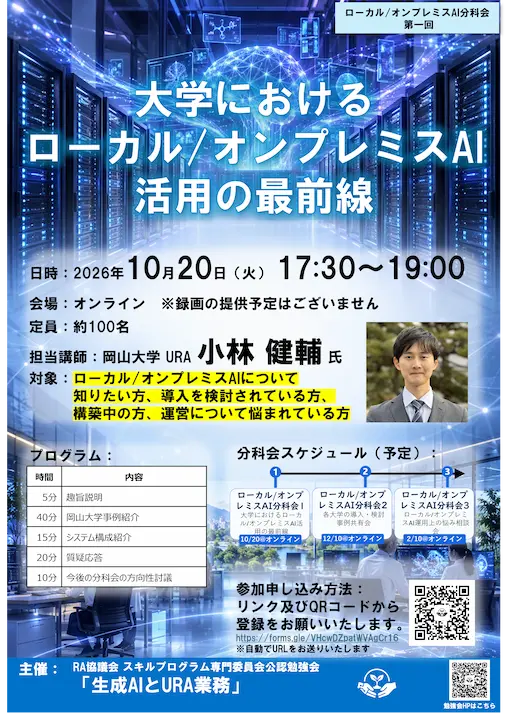

ローカル/オンプレミスAI分科会を立ち上げ + 第一回目分科会の開催 のお知らせ
「生成AIとURA業務」勉強会では、新たに「ローカル/オンプレミスAI分科会」を立ち上げます。
大学における生成AI活用が急速に進む一方で、研究データや学内情報などの機微情報を適切に取り扱うため、データガバナンスや情報セキュリティを考慮したローカル環境でのAI活用への関心が高まっています。
本分科会では、10/20（火） 第一回目の分科会にて、岡山大学における先進的な取り組みの紹介を皮切りに、各大学での導入事例や運用上の課題、研究支援業務における実践的な活用方法について共有・議論します。
すでにローカルAI環境を導入済みの大学はもちろん、検討中・試験運用中・情報収集中の方の参加も歓迎します。各大学の知見を持ち寄りながら、今後の大学における生成AI活用のあり方を考える場にしたいと考えています。

開催概要
- 名称：ローカル/オンプレミスAI分科会 第一回
- 内容：岡山大学の事例紹介、参加大学による情報共有、意見交換
- 対象：URA、研究推進担当者、情報基盤担当者、大学職員、研究者等
- 形式：オンライン開催
- 日時：10月20日（火）17:30～19:00
参加申込
参加をご希望の方は、以下の申込フォームよりお申し込みください。
ご都合の合う方はぜひご参加ください。
関連情報
- 勉強会のイベント情報をメールで受信されたい場合は、 こちら から連絡リストにご登録ください。
＜ お知らせ一覧に戻る